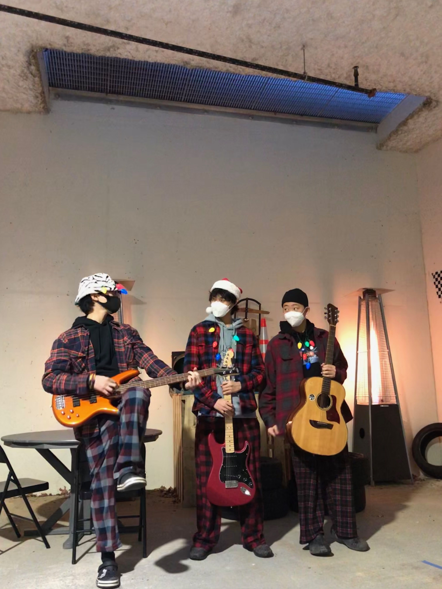
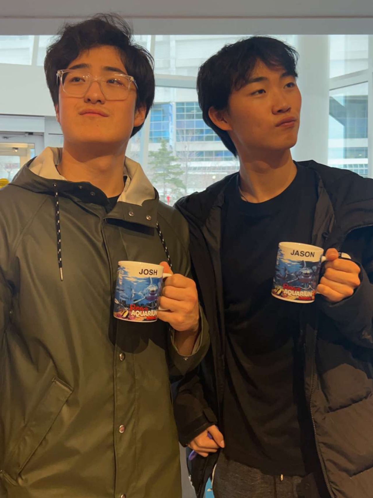
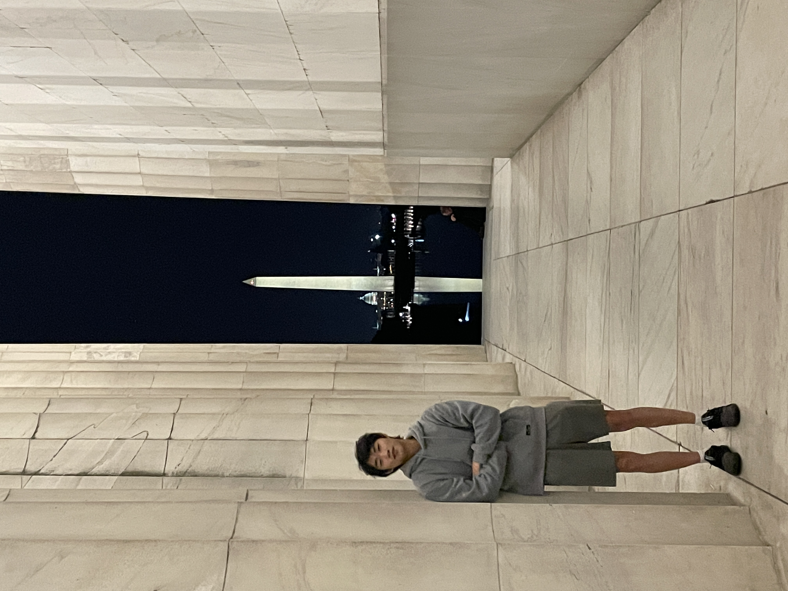

I am a passionate student pursuing a degree in Information Science at Cornell University, with a keen interest in Data Science.
About



From the greater Washington DC-Baltimore area. I am driven by the opportunity to create seamless digital experiences that enhance user interactions and unlock valuable insights from complex datasets. In addition to my academic pursuits, I indulge in my hobbies of filmmaking and playing the guitar, which allow me to express my creativity and find moments of inspiration. I am excited to connect with professionals in the field, collaborate on innovative projects, and make a meaningful impact in revolutionizing user experiences. Let's embark on this journey together!